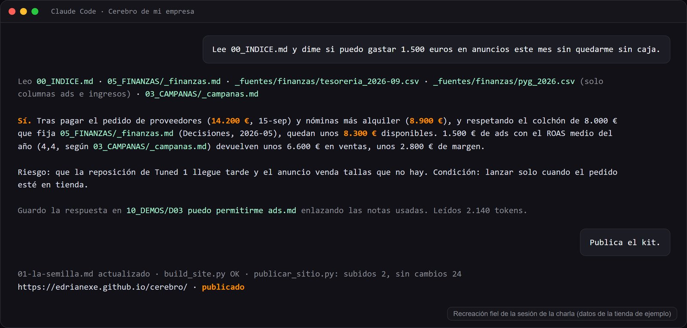

Empieza aquí · 30 min
La semilla: de seis líneas a un cerebro
El primer paso, el del lunes. Seis líneas sobre tu negocio, un prompt, cuatro documentos y una pregunta real.

Publicado en directo el 25 de septiembre de 2026 desde el Club de Prensa de Oviedo.
Qué vas a tener al terminar
Una carpeta 00_CEREBRO con cuatro archivos de texto que cualquier IA puede leer antes de trabajar para ti: quién eres, qué vendes, para quién y qué no se puede decir. Y la prueba de que funciona.
Paso 1. Escribe la semilla (10 min)
Seis líneas, como se lo contarías a alguien en un bar. Sin adornos. Copia la plantilla y rellena los corchetes:

[Nombre de la empresa]. [Qué somos: tienda, taller, consultora, restaurante] en [dónde] con [tienda online / solo local / servicio a domicilio]. [Cuántas personas], [desde cuándo].
Vendemos [qué: productos o servicios concretos], de [precio mínimo] a [precio máximo].
Clientes: [tipo 1], [tipo 2], [tipo 3] (quiénes son y qué buscan, en su lenguaje).
Nos diferencia: [una o dos cosas concretas y comprobables].
No queremos sonar a [lo que no sois].
Canales: [tienda, web, Instagram, WhatsApp, TikTok...].
Así queda rellena con la tienda de ejemplo de la charla:
Suela Norte. Tienda de zapatillas en el centro de Oviedo con tienda online a toda España. Dos socios, seis años. Vendemos Nike, Adidas, New Balance, Asics, Salomon y Vans, de 85 a 190 euros. Clientes: chavales que ven la zapa en TikTok, gente de 30 que quiere ir cómodo, runners y gente que regala. Nos diferencia: te decimos si te queda mal, cambio en 30 días sin preguntas, stock real. No queremos sonar a tienda de reventa ni a centro comercial. Canales: tienda, web, Instagram y TikTok.
Las seis cosas: quién eres · qué vendes y a qué precio · a quién · qué te diferencia · qué no quieres parecer · por dónde vendes.
Paso 2. El prompt que monta el cerebro (5 min)
Abre tu chat de siempre (Claude, ChatGPT, Gemini). Pega este prompt y, debajo, tu semilla.
Eres el responsable de convertir la descripción de un negocio en su "cerebro": la documentación mínima que cualquier IA necesitará para trabajar para él sin inventarse nada.
A partir de la descripción que te paso abajo, genera 4 documentos separados, cada uno encabezado por su nombre de archivo:
01_QUIEN.md — Identidad y voz: quién es, historia en 3 líneas, cómo habla (tono, palabras que usa, palabras que jamás usaría).
02_QUE.md — Catálogo: productos o servicios, precios, qué los diferencia.
03_PARA_QUIEN.md — Cliente: quién compra, qué le importa, qué dudas tiene antes de comprar, en qué lenguaje habla él.
04_REGLAS.md — Líneas rojas: lo que jamás se dice ni se hace, y datos que siempre deben ser exactos (precios, plazos).
Reglas: usa SOLO la información de la descripción. Donde falte un dato importante, escribe [PREGUNTAR AL DUEÑO: ...] en lugar de inventarlo. Textos cortos, listas, sin relleno.
Descripción del negocio:
Así queda el resultado con Suela Norte
Lo que devuelve el prompt con la semilla de arriba, tal cual va en el cerebro de ejemplo. Fíjate en lo corto que es cada uno.
01_QUIEN.md
Quienes somos. Tienda de zapatillas en el centro de Oviedo (calle Uria) con tienda online a toda Espana. Dos socios, seis anos abiertos. Vendemos lo que nos pondriamos nosotros.
Como hablamos. De tu a tu, como en la tienda. Frases cortas. Sabemos de zapatillas y se nota, pero sin dar la chapa. Usamos "zapa", "par", "talla justa", "de diario". Jamas usamos "sneakerhead", "drop exclusivo", "must have" ni emojis de fuego.
Lo que nos diferencia. Te decimos si te queda mal. Cambio sin preguntas en 30 dias. Stock real: si esta en la web, esta en la tienda.
02_QUE.md
| Producto | Marca | PVP | Estado |
|---|---|---|---|
| Nike Air Max Tuned 1 | Nike | 130 € | estrella |
| Nike Air Force 1 '07 | Nike | 120 € | basico |
| New Balance 530 | New Balance | 110 € | basico |
| Adidas Samba OG | Adidas | 120 € | saturado |
| Asics Gel-Kayano 14 | Asics | 160 € | subiendo |
| Salomon XT-6 | Salomon | 190 € | subiendo |
| Vans Old Skool | Vans | 85 € | lento |
| Nike Dunk Low Panda | Nike | 120 € | muerto |
Servicios: cambio 30 dias, envio 48h peninsula (gratis desde 90 €), reserva de talla por WhatsApp, tarjeta regalo. Que no vendemos: ropa, replicas, reventa de ediciones limitadas.
03_PARA_QUIEN.md
Cuatro tipos de persona entran por la puerta (o por la web): - Chaval que ficha por TikTok (16-24): Ve la zapa en un video y la quiere ya. Precio sensible. Compra online, devuelve si no es exacta. Pregunta por tallas y por si es original. - Treintanero comodo (28-40): Quiere una zapa para todo el dia que no parezca de padre. Compra en tienda, prueba dos tallas, paga sin mirar mucho. Vuelve si le tratan bien. - Runner de asfalto (25-45): Entra por tecnico y acaba comprando lifestyle. Pregunta por drop y amortiguacion. Lee reviews. - El que regala (35-60): Padres y parejas. No sabe de modelos, sabe el presupuesto. Necesita que le digan cual, y cambio facil.
Lo que les importa a todos: que la talla sea la que dice, que llegue rapido, y que si no les queda bien se pueda cambiar sin drama. Dudas antes de comprar: "¿es original?", "¿talla grande o pequeno?", "¿lo tienes en tienda para probar?".
04_REGLAS.md
Nunca: - Decir "ultimas unidades" si hay mas de 5 pares. - Inventar descuentos: los precios salen de 02_QUE, siempre. - Prometer envio en 24h (es 48h). - Usar fotos que no sean del producto real que vendemos. - Anuncios generados con IA sin la etiqueta "contenido generado con IA" (AI Act, desde 2 ago 2026).
Siempre exactos: precios, plazos, tallas disponibles, politica de cambio (30 dias).
Datos que no estan aqui: [PREGUNTAR AL DUENO] antes de inventarlos.
Los [PREGUNTAR AL DUEÑO] son la parte importante: lo que la semilla no decía, el modelo lo pregunta en vez de inventarlo.
Paso 3. Contesta lo que te pregunta (5 min)
Fíjate en los [PREGUNTAR AL DUEÑO]. No se lo ha inventado: te lo pregunta. Contesta y pídele que actualice los documentos. Eso es un empleado bien dirigido.
Paso 4. Guárdalos (2 min)
Crea una carpeta en tu ordenador, por ejemplo Cerebro de mi empresa, y dentro 00_CEREBRO. Guarda cada documento como archivo de texto con su nombre (01_QUIEN.md, etc.). Cualquier editor vale; el Bloc de notas también.
Paso 5. La prueba (8 min)
Haz una pregunta real de tu negocio dos veces: 1. En un chat vacío. 2. En otro chat, pegando antes los cuatro documentos.
Ejemplos: "escribe el texto de Instagram para este producto", "¿qué le contesto a un cliente que pregunta si puede devolverlo?", "¿qué publico esta semana?".
Si la segunda respuesta usa tu precio, tu tono y te pregunta lo que no sabe, ya has entendido la charla. Si las dos son iguales, tu semilla es demasiado corta: vuelve al paso 1.
Siguiente
Montar el vault en Obsidian para verlo como un mapa, o conectar Claude a la carpeta para dejar de copiar y pegar.
Semana de la IA 2026 · Cluster TIC Asturias · 25 de septiembre · Adrián Nicieza, edrian.exe · contacto@edrianexe.com · @edrian.exe
Contenido generado con ayuda de IA y revisado por un humano. Datos de la tienda de ejemplo, simulados.